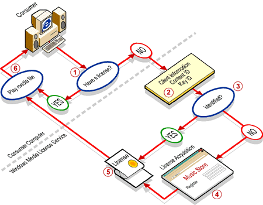

Andrea Pruneda and Starr Andersen
Microsoft Corporation
Posted April 14, 1999
Contents
Overview
Hardware and Software Requirements
Windows Media Rights Manager Components
Planning a DRM System
Summary
Overview
Digital Rights Management (DRM) is the technology for securing content and managing the rights for its access. This technology is still being developed and researched; however, the first step toward preventing piracy of digital media content is being taken with the introduction of Microsoft® Windows® Media Rights Manager. Using Windows Media Rights Manager, you can make your content more secure through encrypting your files and by providing licenses to your users. By implementing this feature, you will also be able to determine who has copies of your content and place a digital signature on each piece of content you distribute.
Using Windows Media Rights Manager will have an impact on your entire streaming system. This article is meant as an introduction to the feature and to the method of licensing content.
Hardware and Software Requirements
Before you install Windows Media Rights Manager, make sure that your server platform(s) meet all of the following hardware and software requirements. For more information about the software listed, see the Microsoft Web site.
- a computer with Pentium class or later processor
- 500 megabytes (MB) of available hard-disk space
- Microsoft® Windows NT® Server version 4.0 with Service Pack 4
Note It is strongly recommended that you run the Web server on an NTFS file system partition. When you install Windows Media Rights Manager on an NTFS partition, access control lists (ACLs) are set up to restrict access to Microsoft® Windows® Media Packager, the tool you use to administer your Windows Media Rights Manager Web site. When you run Windows Media Packager, you log on using the same account as the one that was used during installation. If you set up Windows Media Rights Manager on a FAT partition, anyone with access to the Web server computer can administer the Web site.
- Microsoft® Windows NT® version 4.0 Option Pack with Service Pack 1
- Microsoft® Internet Explorer 5 (preferred), or Microsoft® Internet Explorer version 4.01 with Service Pack 1
- Microsoft® SQL Server version 7.0
Note You must use SQL Server authentication rather than Windows NT authentication. Also, the SQL Server Client Network Utility must use TCP/IP rather than named pipes.
- Microsoft® Windows® Media Tools version 4.0
- Microsoft® Windows® Media Player version 6.2
Note Installation of the following software is optional:
- Microsoft® Windows® Media Services version 4.0 enables streaming of media items
- Microsoft® Data Access Component version 2.0 enables communication between Windows Media Rights Manager and a remote SQL Server
Windows Media Rights Manager Components
When you set up Windows Media Rights Manager, Microsoft® Windows® Media Packager and server components are installed on your Web server.
- Windows Media Packager is the tool you use to create and manage your Windows Media Rights Manager Web site, where you publish your media files on the Internet. You also use Windows Media Packager to manage media files, configure your Web site, configure the way Windows Media Rights Manager works, and view statistics for your Web site. It creates packaged files that are encrypted and cannot be played without a valid license.
- The server components create and manage pages on your Web site, generate encrypted copies of your media files, issue licenses to registered consumers, and store information about media files, licenses, and registered consumers.
The consumer browses your Web site and selects a packaged media file for download. When the consumer attempts to play the file, a player version check is performed. Consumers must have Windows Media Player version 6.2 to play packaged media files. If the correct version is not installed, the browser starts and navigates to a download site where the correct version of Windows Media Player can be downloaded.
Windows Media Player then checks if the consumer has a license to play the media file. If the consumer does not have a valid license, the browser starts and navigates to the registration page on your Web site. Windows Media Rights Manager issues a license after the consumer fills out the registration information, and then Windows Media Player plays the media file. The consumer can play the media file without connecting to the Internet until the license expires.
Planning a DRM system
Your DRM system has the following components:
- Web server. Your Web site is the focal point of your DRM system. It is the method by which your content is distributed to your consumers and the point at which consumer registration occurs. Windows Media Packager creates the skeleton of your Web site for you. However, to have a Web site that is visually exciting, it is recommended that you edit the pages yourself to give them a consistent look and feel. An easy way to do this is to use Microsoft® FrontPage® themes.
- SQL Server. Your SQL Server databases are integral to the success of your DRM system. SQL Server databases are created that record the traffic on your Web site, such as user registrations, content downloads, and license distributions. You can create many useful reports out of your databases that can help you target your content to your consumers.
- Encoding platform. Your encoding platform is the computer on which you create your media content. Windows Media Packager can create content directly from stored source .wav or .mp3 files. To create content using a live source or .avi file, use Microsoft ® Windows® Media Encoder.
The License Acquisition Process
Before a consumer can play a protected media item, he or she must acquire a license, which contains a key that unlocks the content. Licenses are unique to each consumer; therefore, licenses cannot be shared, copied, or used on different computers.
Each license contains the following information:
- The license version.
- The key to play the media item.
- A signature, which ensures the license has not been tampered with.
- The rights of the license. By default, the consumer has rights to play a media item and to copy it to a portable device and play it.
- The application security level, which ensures that only applications with this or a higher level of security can use the license. By customizing the license acquisition process, you can set the application security level for licenses.
- The expiration date of the license. By default, licenses do not expire. However, by customizing the license acquisition process, you can set the number of days for which a license is valid. The expiration date is calculated when the license is issued. For example, if you set the license to be valid for 30 days, the license expiration date is one month after it is issued.

Figure 1. The license acquisition process
As shown in Figure 1, Microsoft ® Windows® Media License Service runs the license acquisition process as follows:
- A consumer tries to play a protected media item. When Windows Media Player opens, it checks if the consumer has a valid license. If there is a valid license, Windows Media Player plays the media item.
- If the consumer does not have a license, information from the client and identification for the media item and key are sent to a license acquisition URL. The IDs and URL are included in the media item.
- License Service determines whether the consumer is identified (has specified an e-mail address).
- This step is determined by the configuration settings of your site for cookies. You can use cookies to identify consumers with an e-mail address, or you can choose to not use cookies and always request registration information.
- If a consumer is not identified, he or she must register. First-time visitors (or all visitors if you do not use cookies) must fill out the registration information.
- This registration information is added to the database, so you can gather information about the consumers who have acquired licenses.
- Using the client information and identification numbers of the media item and key, License Service generates a license and issues it to the consumer. This license is specific to that consumer and cannot be used on other computers.
- License Service also updates the database with the license transaction information, which includes the media item for which the license was issued, the key, the consumer who acquired the license, the date, and the expiration date of the license.
- Windows Media Player plays the media item.
Summary
With Windows Media Rights Manager, you can deliver digital media, such as songs and videos, over the Internet in a protected manner by encrypting your media items with a key (a piece of data that unlocks the content). After consumers download media items, they must acquire a license that contains the key by registering on your Web site. Once the license is issued, the consumer can play the media item.
Windows Media Rights Manager helps you create a Web site with which you can distribute packaged content. Consumer statistics, downloaded content, and licenses are stored in a SQL Server database.